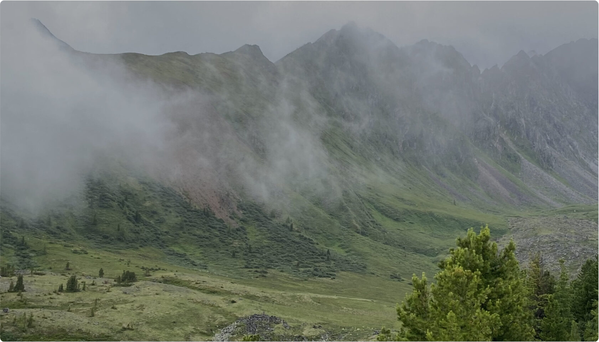

Начало путешесвия
Сбор группы на жд вокзале г. Иркутска в 9:00. Трансфер на
комфортабельном микроавтобусе до Аршана. По пути любуемся
красивыми видами на горы Восточных Саян. По приезду в Аршан обед
в кафе (не включен в стоимость тура)
Заброска и первые км
После обеда пересаживаемся на УАЗ для заброски к началу тропы
(10км)
Поход к горном перевалу
Надеваем рюкзаки и отправляемся в пеший поход до невероятной
красоты Озера Серебряное, окружённого горным цирком. Озеро
располагается на высоте 1800 м, поход от места заброски к озеру
составит 3,5 км (около 3х часов)
Дом у озера Заселяемся в уютный
домик у озера, готовим вкусный ужин, посиделки у костра и
разговоры по душам. Ранний отбой, ведь завтра нас ждёт не
простой день: восхождение на Пик Улябор
День 2. Пик Улябор
Начало путешесвия
Сбор группы на жд вокзале г. Иркутска в 9:00. Трансфер на
комфортабельном микроавтобусе до Аршана. По пути любуемся
красивыми видами на горы Восточных Саян. По приезду в Аршан обед
в кафе (не включен в стоимость тура)
Заброска и первые км
После обеда пересаживаемся на УАЗ для заброски к началу тропы
(10км)
Поход к горном перевалу
Надеваем рюкзаки и отправляемся в пеший поход до невероятной
красоты Озера Серебряное, окружённого горным цирком. Озеро
располагается на высоте 1800 м, поход от места заброски к озеру
составит 3,5 км (около 3х часов)
Дом у озера Заселяемся в уютный
домик у озера, готовим вкусный ужин, посиделки у костра и
разговоры по душам. Ранний отбой, ведь завтра нас ждёт не
простой день: восхождение на Пик Улябор

В СТОИМОСТЬ ВКЛЮЧЕНО:
Организация тура
Комфортный трансфер из Иркутска и обратно
Заброска (10 км) на УАЗах до начала тропы и обратно
Питание (ужин, завтрак, перекусы во время похода)
Питание (ужин, завтрак, перекусы во время похода)
Проживание в палаточном лагере (зона костра, туалет,
обеденный стол)
ПОЗАБОТИТЬСЯ САМОСТОЯТЕЛЬНО:
Питание в кафе по дороге и обратно
#ОТЗЫВЫ
ВОПРОС - ОТВЕТ
Насколько будет сложно?
Уровень сложности похода 5 из 10. Подойдет для путешественников
с хорошей физической подготовкой
Можно ли с детьми?
Нет, в данный поход мы не берем детей. Но вы можете пойти с
ребенком в однодневный поход на озеро Серебряное
Что взять с собой?
Список необходимых вещей:
• Рюкзак 60-80 литров (в рюкзак должны поместиться спальник и
личные вещи, а так же в рюкзаке должно оставаться 1/3 места для
распределения продуктов, их мы делим между всеми поровну )
• Спальник от +10 комфорт, в идеале комфорт 0 (особенно
мерзлякам)
• Сидушка (хоба)
• Бутылка с водой (в которую можно наливать воду
постоянно, лучше если она будет не одноразовая)
• Треккинговые ботинки или кроссовки (если кроссовки
обычные, то лучше взять двое, в случае если одни намокнут)
• Тапочки
• Полотенце и купальник
• Средства личной гигиены
• Индивидуальная аптечка
• КЛМН (кружка, ложка, миска, нож)
• Налобный фонарь
• Дождевик
• Палки треккинговые
• Перчатки, шапка флис
• Кепка или бандана
• Солнцезащитный крем и очки
• Термобелье (или лосины и кофта с длинным рукавом) 2
комплекта (один для сна, второй для движения в прохладную
погоду)
• Штаны ходовые быстросохнущие
• Шорты
• Кофта Флис
Футболка или майка
• Куртка тёплая ветрозащитная
• Нижнее белье и носки
• Power Bank
• Гермомешок или пакеты (вещи должны быть сухими)
• Маленький рюкзачок для восхождения 20 л ( положить водичку,
перекус и куртку)
Остались вопросы?
Напишите нам в WhatsApp или Telegramm, мы ответим на все ваши
вопросы


 Питание в кафе по дороге и обратно
Питание в кафе по дороге и обратно